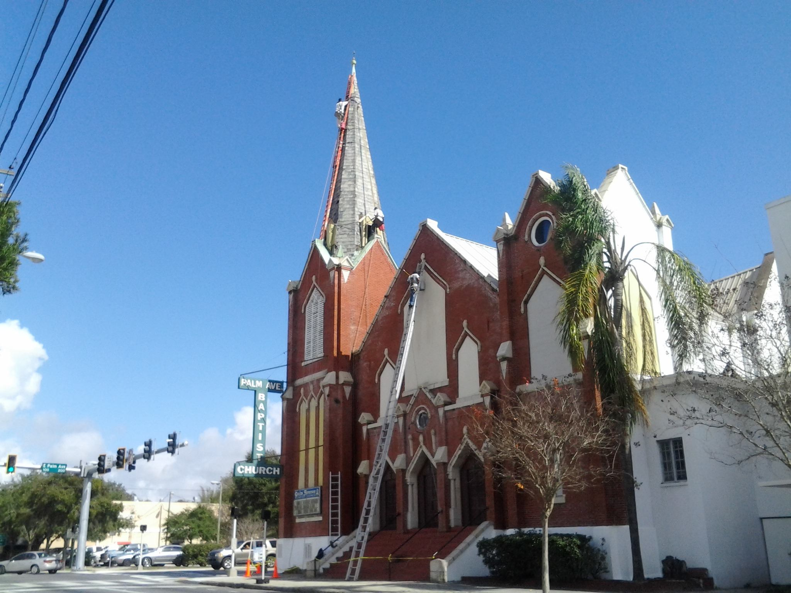

My name is Tony Stratton and I am the president of Inspired Heights as well as a third generation steeplejack. Following the traditions and craftsmanship of our forefathers my team and I are dedicated to the preservation of churches.
The trained steeplejacks of Inspired Heights can offer affordable, less intrusive, solutions for the unique needs of your church. This specialized training allows the church restoration professionals of Inspired Heights to access what may be inaccessable to most other tradesmen.
In addition to our steeplejack services, the diversified team of artisans from Inspired Heights can skillfully perform your interior and exterior church repairs and renovations. We are your church restoration specialists!
Our church maintenance, repair and restoration services include:
If your church requires the expertise of a steeplejack company or the craftsmanship of artisans specialized in church renovation then you need the church and church steeple repair and restoration experts of Inspired Heights.
All content © Inspired Heights, Inc.